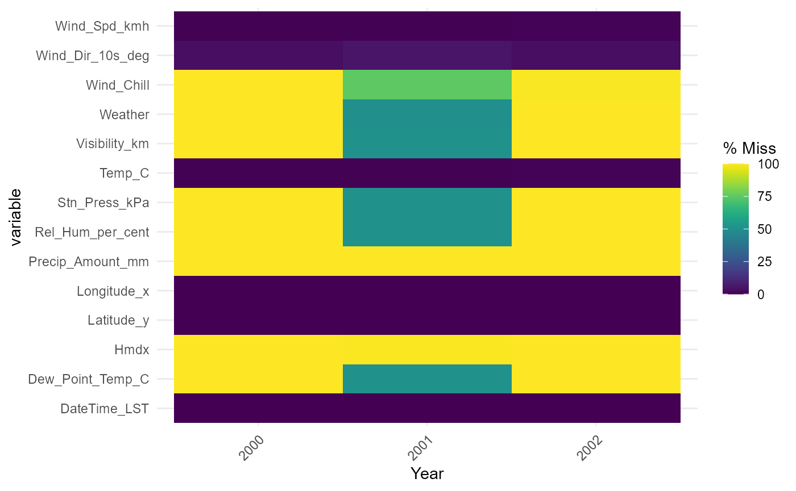
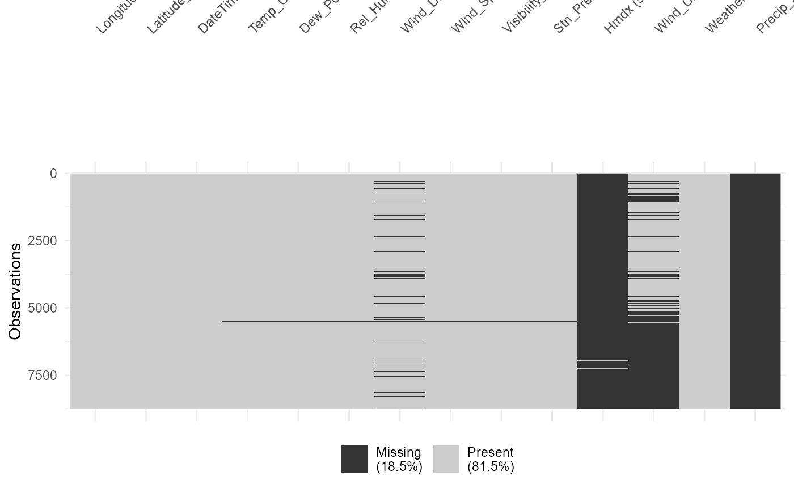

Vingette.RmdAlright here we go! This is the package that I ended up with for my class on data cleaning and reproducible research at Trent University. I’m doing my best. If it doesn’t work, then that’s probably because I’m new to this… Using this package you can:
It’s just wanted a quality of life thing really, I personally don’t like parsing through files to ensure that my stations meet my criteria, so I made a function to do it for me.
You can make it search by province:
Datacleaning::station_helper(province = "Ontario")| Name | Province | Station.ID | HLY.First.Year | HLY.Last.Year |
|---|---|---|---|---|
| ATTAWAPISKAT A | ONTARIO | 52918 | 2015 | 2023 |
| BIG TROUT LAKE A | ONTARIO | 49488 | 2011 | 2023 |
| BIG TROUT LAKE | ONTARIO | 3914 | 1953 | 1992 |
| BIG TROUT LAKE READAC | ONTARIO | 10804 | 1994 | 2013 |
| BIG TROUT LAKE | ONTARIO | 50857 | 2012 | 2023 |
| EAR FALLS (AUT) | ONTARIO | 27865 | 2000 | 2023 |
Or by available year:
Datacleaning::station_helper(available_year = 1999)| Name | Province | Station.ID | HLY.First.Year | HLY.Last.Year |
|---|---|---|---|---|
| DISCOVERY ISLAND | BRITISH COLUMBIA | 27226 | 1997 | 2023 |
| ESQUIMALT HARBOUR | BRITISH COLUMBIA | 52 | 1994 | 2023 |
| KELP REEFS | BRITISH COLUMBIA | 10853 | 1997 | 2023 |
| MALAHAT | BRITISH COLUMBIA | 65 | 1994 | 2023 |
| RACE ROCKS | BRITISH COLUMBIA | 10943 | 1994 | 2023 |
| SATURNA ISLAND CS | BRITISH COLUMBIA | 96 | 1994 | 2023 |
Or even by the starting letter(s) of the station:
Datacleaning::station_helper(starting_letter = "Y")| Name | Province | Station.ID | HLY.First.Year | HLY.Last.Year |
|---|---|---|---|---|
| YOHO PARK | BRITISH COLUMBIA | 6844 | 1994 | 2023 |
| YELLOWKNIFE A | NORTHWEST TERRITORIES | 1706 | 1953 | 2013 |
| YELLOWKNIFE A | NORTHWEST TERRITORIES | 51058 | 2013 | 2023 |
| YELLOWKNIFE AIRPORT | NORTHWEST TERRITORIES | 55358 | 2022 | 2023 |
| YOHIN | NORTHWEST TERRITORIES | 1635 | 1973 | 2023 |
| YATHKYED LAKE (AUT) | NUNAVUT | 10803 | 1993 | 2004 |
The best part about the starting letter is that it’s not limited to just one letter, so if you know the start of the station name, it becomes even easier to find!
Datacleaning::station_helper(starting_letter = "OTT")| Name | Province | Station.ID | HLY.First.Year | HLY.Last.Year |
|---|---|---|---|---|
| OTTAWA CDA RCS | ONTARIO | 30578 | 2000 | 2023 |
| OTTAWA MACDONALD-CARTIER INT’L A | ONTARIO | 4337 | 1953 | 2011 |
| OTTAWA INTL A | ONTARIO | 49568 | 2011 | 2023 |
| OTTAWA ROCKCLIFFE A | ONTARIO | 4344 | 1953 | 1964 |
| OTTAWA STOLPORT A | ONTARIO | 7684 | 1974 | 1976 |
| OTTAWA GATINEAU A | QUEBEC | 50719 | 2012 | 2023 |
If you want, you can also use them in any combination!
Province and year:
Datacleaning::station_helper(province = "QC", available_year = 1967)| Name | Province | Station.ID | HLY.First.Year | HLY.Last.Year |
|---|---|---|---|---|
| QUEBEC/JEAN LESAGE INTL A | QUEBEC | 5251 | 1953 | 2013 |
| TROIS-RIVIERES | QUEBEC | 8321 | 1963 | 2023 |
| MONTREAL/PIERRE ELLIOTT TRUDEAU INTL A | QUEBEC | 5415 | 1953 | 2013 |
| MONTREAL/ST-HUBERT A | QUEBEC | 5490 | 1953 | 2005 |
| SHERBROOKE A | QUEBEC | 5530 | 1962 | 2005 |
| MANIWAKI UA | QUEBEC | 5607 | 1953 | 1993 |
Province and starting letter:
Datacleaning::station_helper(province = "YT", starting_letter = "T")| Name | Province | Station.ID | HLY.First.Year | HLY.Last.Year |
|---|---|---|---|---|
| TESLIN A | YUKON TERRITORY | 1610 | 1953 | 2014 |
| TESLIN A | YUKON TERRITORY | 52321 | 2014 | 2023 |
| TESLIN (AUT) | YUKON TERRITORY | 8985 | 1994 | 2023 |
| TESLIN A | YUKON TERRITORY | 53027 | 2014 | 2023 |
Year and starting letter:
Datacleaning::station_helper(available_year = 2005, starting_letter = "Q")| Name | Province | Station.ID | HLY.First.Year | HLY.Last.Year |
|---|---|---|---|---|
| QUESNEL AWOS | BRITISH COLUMBIA | 30967 | 2005 | 2011 |
| QUESNEL A | BRITISH COLUMBIA | 640 | 1953 | 2006 |
| QAVVIK LAKE | NORTHWEST TERRITORIES | 27889 | 2000 | 2011 |
| QIKIQTARJUAQ A | NUNAVUT | 8271 | 1988 | 2013 |
| QIKIQTARJUAQ CLIMATE | NUNAVUT | 42803 | 2005 | 2023 |
| QUEBEC/JEAN LESAGE INTL A | QUEBEC | 5251 | 1953 | 2013 |
Even all three at the same time!
Datacleaning::station_helper(province = "PE", available_year = 2020, starting_letter = "S")| Name | Province | Station.ID | HLY.First.Year | HLY.Last.Year |
|---|---|---|---|---|
| ST. PETERS | PRINCE EDWARD ISLAND | 41903 | 2003 | 2023 |
| STANHOPE | PRINCE EDWARD ISLAND | 6545 | 2013 | 2023 |
| SUMMERSIDE | PRINCE EDWARD ISLAND | 10800 | 1994 | 2023 |
Now that we know how to find our stations of intrest, let’s go download some data!
Depending on the amount of data that you want, there are several different functions that you could use. Let’s start at the smallest.
This is the smallest of the bunch. This one will just download one
month of data from the station and year of your choice. All you need to
do is provide it with: the month and year you want downloaded, and
either a station name or station ID. While you do not need to provide
both, it is recommended that you do so. This and all of the other
download functions also have the option to make the downloads into
temporary files in your R environment instead on downloading them
straight to your computer. While the function defaults to saving to your
computer, you can make the files temporary, use
temporary = TRUE.
Datacleaning::download_just_one_csv_with_checks(station_name = "SUMMERSIDE",
station_ID =10800,
year = 2001,
month = 12,
temporary = FALSE)One step up we can download all twelve months for one station for a
selected year. Once again, you’ll only need the year of interest and the
station names and/or station ID. Again, having both is recommended, but
unnecessary. Just like the previous function, this one has the option to
make the downloads into temporary files in your R environment instead on
downloading them straight to your computer. While the function defaults
to saving to your computer, you can make the files temporary, use
temporary = TRUE.
Datacleaning::download_all_one_station_one_year(station_name = "OTTAWA STOLPORT A",
station_ID = 7684,
year = 1975,
temporary = FALSE)We can also download an entire station’s worth of hourly data. That
is to say every month of every year that the station was collecting
hourly data. All you need for this one is the station name and/or
station ID. Just like the others, this function has the option to make
the downloads into temporary files in your R environment instead on
downloading them straight to your computer. While the function defaults
to saving to your computer, you can make the files temporary, use
temporary = TRUE.
Datacleaning::download_all_one_station(station_name = "QUEBEC/JEAN LESAGE INTL A",
station_ID = 5251,
temporary = FALSE)And now we have the big boys. Downloading all of the available hourly
station data from all of the stations in all of Canada. You don’t even
need to enter anything for this one! Now, say it with me, like the
others, this function has the option to make the downloads into
temporary files in your R environment instead on downloading them
straight to your computer. While the function defaults to saving to your
computer, you can make the files temporary, use
temporary = TRUE. Why you would want to save this as a
temporary file? I don’t know, but it’s a thing you can do if you so
choose.
There is also an option in this one to select and download random
stations, as it was used as a way for me to test my function without
having to run the entire thing over and over and over again. So added
functionality I guess? That was never the main goal of this function
though… You can make it chose some random stations by using the
limit_for_testing argument and setting it to the number of
stations that you want to download.
Datacleaning::download_all_station_data(limit_for_testing_purposes = 4,
temporary = FALSE)Because we have entirely too many csv files, we can shove them all into a database to make it easier to use. What this function does is to take your file path, look at all the subdirectories—such as those created by the above download functions—and take all of the csv files to shove into a database. This database has two tables, the station table, which contains the station metadata, and the observation table, which contains all the observation data. Please be aware that this will look at ALL the csv files in the selected directory and subdirectories, so if you just have a random csv file not downloaded through the above download functions, it will go wonky and may break on you.
make_database(file_path_to_csv_files = "./station_data",
database_name = "Hourly_Weather_Station_Database.sqlie")There are two shiny apps that can help you visualise missing data. Let’s start with the heatmap.
This is a sanity check to help you look at the percentages of missing data between and within stations. Because there are SO. MANY. STATIONS, it’s much more convenient to have an interactive app than 2000 individual plots. Now, this function is finicky because I couldn’t quite get my bullet proofing, so just don’t be an idiot.
Datacleaning::missing_data_visualiser_heatmap(dat = demo_data)
This is another sanity check that looks at weather a variable is missing at each observation for an entire year at one station. As there would be one graph per year per station, could you imagine making that many graphs manually? I would not like it, so I made this instead to help with comparison. Once run, you can select both the station and year of interest. Also the graphs look like a bar code.
Datacleaning::missing_data_visualiser_barcodes(dat = demo_data)